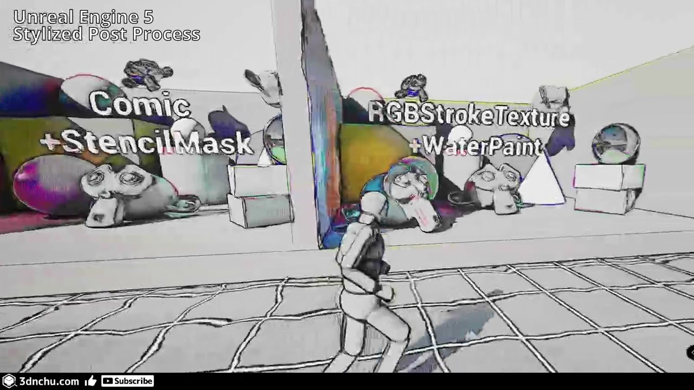

歷史參考｜UE5 風格化後製：外框、排線與單一主材質
這篇 2023 年文章介紹 UE5 風格化後製材質，包含外框、程序或自訂紋理排線，以及外框、背景和著色偏移；文中另保留 v2.0 的後續開發預告。

Unreal ★★★☆☆
完整分析
外框與排線的後製技術
功能列出依摺痕、深度、法線、邊緣與著色的線條表現，也有噪波程序排線或自訂紋理，並可偏移外框、背景及著色。這些是後製材質的可調方向，不代表它已改變模型拓樸或生成真正的幾何外殼。
單一主材質的製作維護價值
作者刻意把功能建在一個主材質內，理由是提高可讀性並避免參照遺失。推論上，整合式材質便於沿同一入口理解參數，但文章沒有列所有分支的運算成本，不能把單一材質誤寫成一定比拆分效果更快。
示例資產與版本預告限制
範例關卡不包含 ALSV4，也假設使用者已會基本 Unreal 後製。文中 v2.0 是開發與預定 2025 年春季公開的註記，不是本文已驗證完成；免費 GitHub 與 Gumroad 贊助管道亦不能取代今日下載和授權狀態核對。
BRIEF｜來源已驗證；證據深度較有限，完整分析會明確區分已知資訊與待驗證事項。